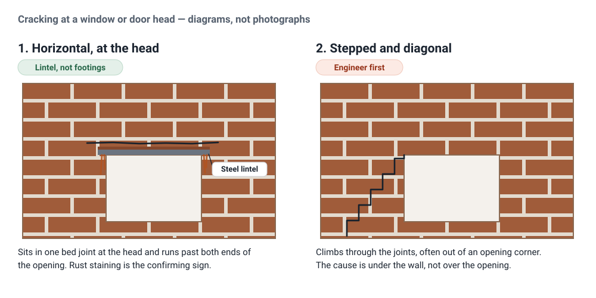

Lintel repair and replacement in Perth
The steel beam over a window or door rusts, expands, and lifts the brickwork above it. It looks like a structural crack, and it is usually the cheapest structural-looking problem you will ever be quoted for.
- Sending an enquiry costs you nothing
- No obligation, just get more info about what you need
- Perth metropolitan area
Researched and written by Brad, Perth Brickwork. Sources cited inline. Last reviewed 3 September 2026.
A horizontal crack that appeared above a window. Brick faces lifting or stepping out of line at the head of a door. A rusty brown stain weeping out of one mortar joint. Windows that have started sticking in their frames for no obvious reason.
These are lintel symptoms, and they get misread as subsidence more often than any other defect on a Perth house. The distinction matters because it changes who you call, what it costs, and how urgent it is.
What a lintel is, and why Perth is full of them
A lintel is the beam over an opening. Brickwork cannot span a gap on its own, so every window and every door in a masonry wall needs something carrying the load across the top of it and down into the brickwork either side. In Perth that something is almost always a galvanised steel angle. Midland Brick, the state's dominant brick supplier, sells them off the shelf in standard lengths from 940mm up to 3140mm.
Perth is a double brick city, which means the walls either side of your windows are the structure of the house rather than a skin hung on a frame. On a cavity wall an opening has to be carried across both leaves, and the lintel over the outer leaf sits in the cavity, in the one part of the wall that is designed to get wet. That is the whole problem in a sentence.
Telling a lintel crack from a movement crack
This is the single most useful thing on this page, because the two get confused constantly and the wrong diagnosis is expensive in both directions. Underpinning a wall whose lintel has rusted is money set on fire. Replacing a lintel in a wall that is actually moving fixes the symptom and leaves the cause.
A lintel crack is horizontal and it lives at the head of the opening. It follows one bed joint, it usually runs past both ends of the window rather than stopping at the frame, and the brickwork above it can be visibly lifted, tilted forward or stepped out of plane. Rust staining bleeding from that joint is close to conclusive.
A movement crack is diagonal. It steps up through the mortar joints, it frequently radiates out of the corner of an opening rather than sitting along its head, and it tends to be wider at one end than the other. That is a cause under the wall - footings, soil, drainage, tree roots - and it is an engineer's diagnosis before it is a bricklayer's repair.

Neither diagram replaces having someone look at the wall. What they do is tell you which kind of tradesperson to ring first, and that is worth getting right.
Why the steel rusts
Steel rusts when water reaches it, and the rust occupies more room than the steel it replaced. Trapped inside a wall, that expansion has nowhere to go except into the masonry around it, so the joint above the lintel opens, the courses above lift, and the brickwork is pushed out of line. The crack is not the steel breaking. It is the steel growing.
The galvanising is what holds this off, and it is a coating with a service life rather than a permanent property. Once it is breached - by age, by site damage during construction, or by being asked to sit in water for decades - the bare steel underneath starts corroding. Australian durability requirements for built-in lintels and shelf angles are set out in AS 2699.3, with the masonry design itself governed by AS 3700; both are Standards Australia documents, paywalled, and named here rather than reproduced.
What actually delivers the water is usually mundane and usually fixable. A failed or missing flashing over the lintel, so cavity water drains onto the steel instead of over it. Blocked or rendered-over weep holes, so the cavity holds water rather than shedding it. A leaking gutter or downpipe above the opening. Reticulation spraying the wall. Perth adds salt to all of it, from coastal air and from bore water, and salt makes every one of those situations corrode faster.
Corrosion protection for lintels built into masonry is covered by AS 2699.3:2020, Built-in components for masonry construction: Lintels and shelf angles (durability requirements), and masonry design generally by AS 3700. The advice that continuous flashing belongs over the angle even where galvanised or stainless steel has been used, and that lintel deflection is itself a common cause of cracking over openings, is from the US Brick Industry Association's Technical Note 31B, Structural Steel Lintels - cited for the mechanics of how these members fail, not as an Australian compliance requirement. Moisture and salt behaviour in Perth walls follows City of Fremantle, Technical Advice Sheet 5: Dealing with dampness in old walls.
The other reason brickwork cracks over an opening
Not every crack at a window head is corrosion. A lintel that was undersized, or that was never designed at all because someone picked a section by eye, deflects under the load it is carrying. The masonry sitting on it cannot follow that sag, so it cracks. The Brick Industry Association names inadequate lintel design as a common cause of cracking over openings, and sets the serviceability limit at 1/600 of the clear span or 8mm, whichever is smaller - which is a tighter tolerance than most people expect, and the reason "it only sags a little" is not reassuring. Bearing matters for the same reason: the lintel has to sit far enough onto the brickwork at each end to spread its load, with 75mm each end treated as a floor rather than a target.
What replacing a lintel involves
The brickwork above the opening has to be supported before the old lintel comes out, because removing it removes what is holding that brickwork up. That is propping or needling, and it is most of what separates this job from a cosmetic repair. The corroded steel is then cut out, the rust-damaged brick and mortar around it removed, and a new lintel with appropriate corrosion protection installed and bedded in, with flashing over it so the next one lasts.
The brickwork is then rebuilt and repointed to match. On a face brick or character home that matching is a real part of the job rather than an afterthought - a replaced lintel that leaves a patch of obviously new brick and bright grey mortar across the front of the house has solved the structural problem and created a visible one.
Where this stops being a bricklaying decision. If the opening is being widened, if the wall is load bearing and the work goes beyond like-for-like replacement, or if there is any question about what is actually carrying the load, that is engineering territory and generally permit territory. Structural certification in WA has to be endorsed by a professional engineer - the City of Perth, for instance, requires a Certificate of Structural Sufficiency for exactly that assurance. Straight replacement of a failed lintel with an equivalent one is ordinary repair work; changing what the wall does is not.
The certification requirement and its wording are from the City of Perth's Certificate of Structural Sufficiency, which states its purpose is "to provide the City of Perth with assurance that the structural design, materials and form of construction for the proposed building work(s) complies in all respects with the relevant deemed-to-satisfy provisions of the Building Code of Australia" and requires endorsement by a professional engineer. Requirements are set by each local government as permit authority under the Building Act 2011, so check with the council your property sits in rather than assuming Perth's process applies.
What lintel replacement costs in Perth
Not a price list, and deliberately so. The number turns on things a page cannot see: how many openings, whether the wall above is face brick that has to be matched, whether the work is at ground level or needs scaffold, and how much brickwork the corrosion has already destroyed. Real Perth quotes logged by suburb, opening size, storey and building age would be worth publishing. A range lifted from a competitor site or a national average would not, and a false anchor costs you more than no anchor.
What follows is what actually moves the number.
What moves the price
How the brickwork above gets supported. Propping a single ground floor window is a different job to needling a wall under a second storey.
Brick matching. Same problem as any other repair on older stock: some Perth brick is no longer made, older brick is often a different size and will not course in, and matching can mean salvage.
Access. Ground floor with a clear approach, or upper storey over a paved courtyard.
How far the corrosion went. A lintel caught at the staining stage is a smaller job than one that has been lifting brickwork for five years.
Whether the water source is dealt with. Replacing the steel without fixing the flashing, the gutter or the blocked weep holes buys time rather than a repair.
What is usually excluded
- Engineering design or certification where the opening is being altered
- Scaffolding
- Gutter, downpipe or roof plumbing work that is feeding the problem
- Painting or making good render disturbed at the edges of the work
- Salvage sourcing for brick matching
What to ask before you accept a quote
- Is this the lintel, or is the wall moving? Ask what they are basing that on. The answer should reference the direction of the crack, not just its presence.
- Where is the water coming from, and is that in the quote? A lintel that rusted once will rust again under the same conditions.
- Is flashing being installed over the new lintel?
- What is the new lintel, and what is its corrosion protection? Galvanised is standard; harsher exposure may warrant more.
- How is the brickwork above being supported while the old one comes out?
- Can the brick and mortar be matched?
- Is scaffolding in or out?
Frequently asked questions
There is a horizontal crack above my window. Is that serious?
It is worth acting on, but it is usually a lintel rather than the house subsiding, and that is the better of the two answers. A horizontal crack sitting in one mortar joint at the head of an opening, especially with rust staining or brickwork lifted above it, points at the steel over the opening rather than at the footings. Diagonal stepped cracking is the pattern that points at movement instead.
What is the rusty brown stain coming out of my brickwork?
Almost always the lintel. Water inside the wall reaches the steel, corrodes it, and carries iron oxide out through the mortar joint. It is a symptom rather than a stain to clean off - the steel behind it is expanding while it does that, and cleaning the brick face does nothing about the cause.
Can a rusted lintel just be treated rather than replaced?
Sometimes, if it is caught early and the corrosion is superficial. Once the steel has expanded enough to lift the brickwork above it, the expansion is the problem, and treating the surface does not reverse it. What the situation always needs, in either case, is the water source found and stopped.
Do I need a building permit to replace a lintel?
Like-for-like replacement of a failed lintel is ordinary repair work. Widening the opening, changing what the wall carries, or anything that alters the structure is a different matter, and structural certification in WA has to be endorsed by a professional engineer. Permits are administered by your local council as permit authority, so confirm with the council your property is in.
How long does a lintel last?
There is no single answer, because it depends almost entirely on how much water the steel has been sitting in. A galvanised lintel that is properly flashed, with a cavity that drains and weep holes that are clear, can outlast the people living in the house. The same lintel under a leaking gutter, or in a wall whose weep holes were rendered over, can fail in a fraction of that.
Why did my windows start sticking?
Worth checking the head of the opening if it happened without any other explanation. A lintel that is corroding and expanding, or deflecting under load, distorts the opening it is supposed to be holding square, and a door or window that has been fine for decades starts binding in its frame.
Can you fill the weep holes above my window? They look untidy.
No, and filling them is one of the reliable ways to cause the problem this page is about. Weep holes drain the cavity. Blocked, the water stays in the wall and goes to work on the steel over your openings.
How much does lintel replacement cost?
It is priced per opening, and support, access and how much brickwork the corrosion has already damaged move it more than the width of the window does. Send through what you are seeing via the enquiry form, by phone on (08) 9516 1337, or by emailing hello@perthbrickwork.com.au, and we can give you a proper indication once we know the job.
Tell us what you are seeing
Tell us about your job
Free to send, and there is no obligation. Your details go to a bricklayer who covers your part of Perth and does that type of work - the bricklayer pays for the enquiry, you do not. We never sell your details or add you to a marketing list.
Tell us what you are seeing